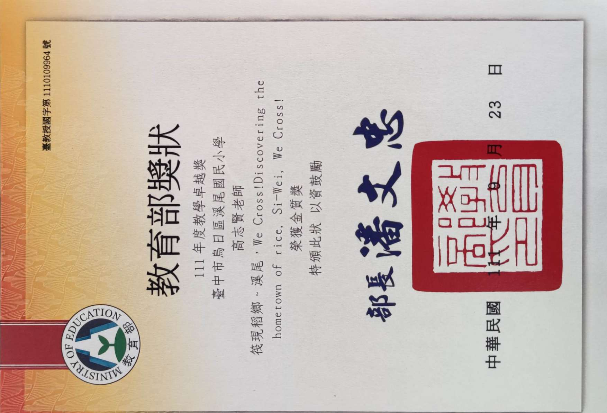
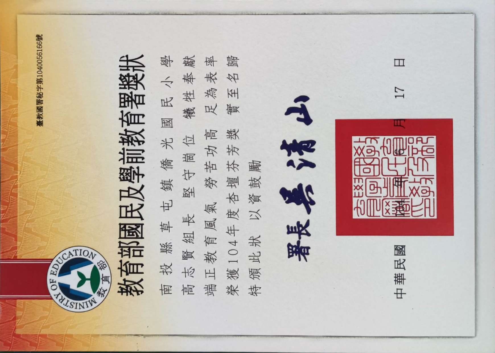
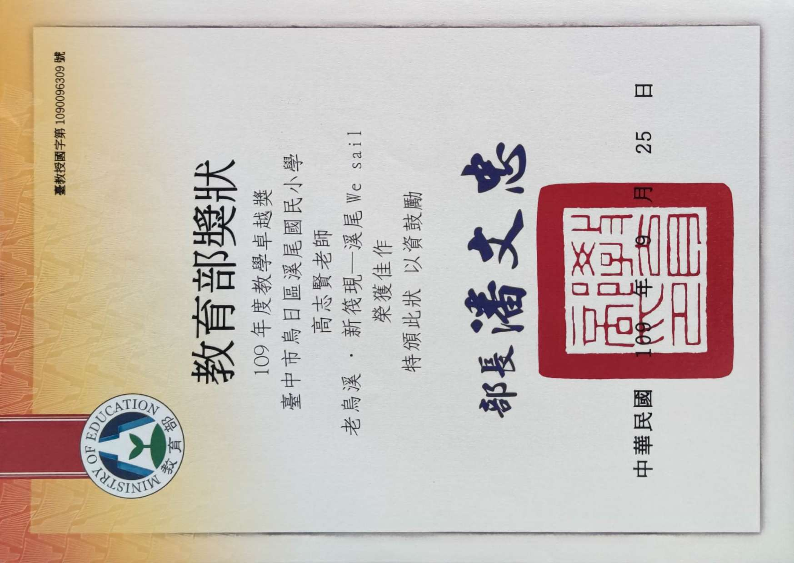
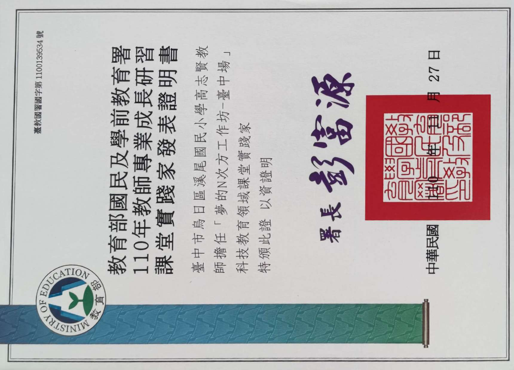
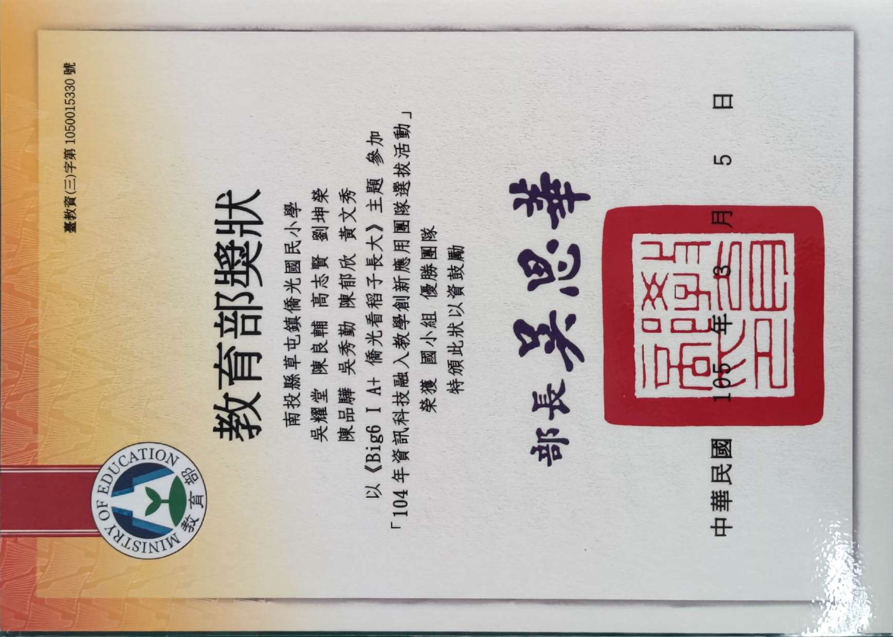
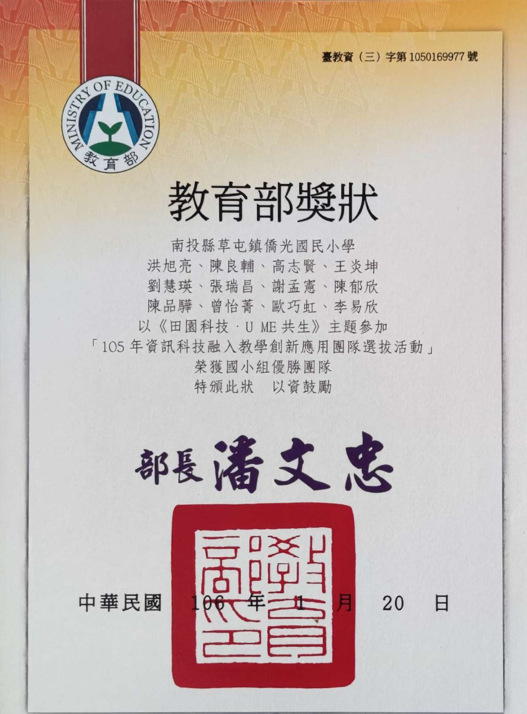
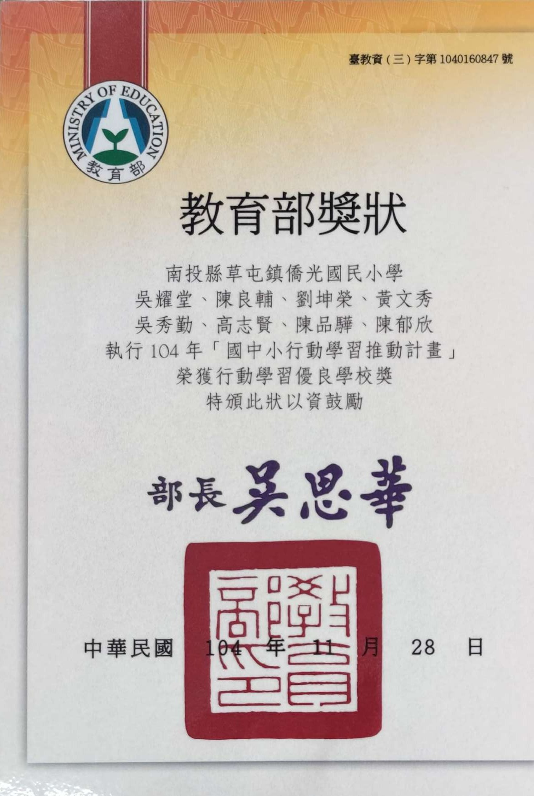
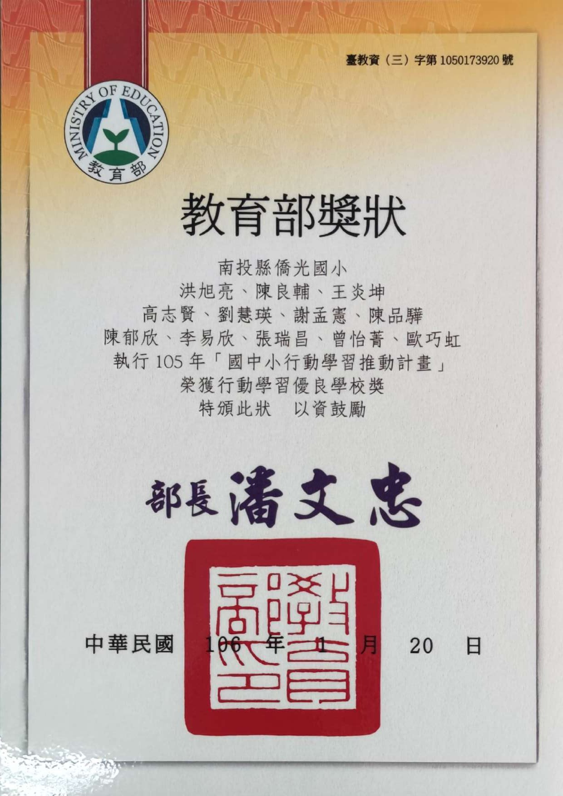

🏫 鹿陽國民小學 • 教師專業成長研習
閱讀理解策略 與 AI 的結合
當我們進行閱讀理解測驗時，我們會怎麼做？
從 PIRLS 國際閱讀架構出發，打造智慧提問、評量與深度對話的新課堂。
👨🏫
研習講師
高志賢 老師
臺中市沙鹿區鹿陽國民小學
🎯 PIRLS 閱讀理解四歷程
🤖 生成式 AI 輔助試題設計
📊 閱讀素養診斷與即時反饋
研習探討核心 Core Mission
01
國際評量視野
掌握 PIRLS 四歷程，跳脫傳統死記硬背出題
↓ 科技賦能
02
AI 協同命題與評估
善用 Prompt 工程，秒級產出四層次高階提問
↓ 課堂落地
03
測驗現場落地實務
自動閱卷、素養雷達圖與即時差異化課堂補救
💡 讓繁重複雜的出題批改交給 AI，把思辨對話還給學生
👨🏫 講師簡介 • SPEAKER PROFILE
高志賢 老師：28 年國小教育現場深耕 × 資工科技跨域融合
高
高志賢 老師
臺中市沙鹿區鹿陽國民小學 • 現職服務第二年
28年+
教學現場累積年資
4所
歷任學校深耕經驗
雙軌
師資專業 × 資訊工程
🎓
師資培育
🏫
任職 19 年
南投縣僑光國小
19 年
💻
跨域進修
東海大學
資訊工程學系
畢業
🏫
任職 7 年
烏日區溪尾國小
7 年
🌟
現任服務
鹿陽國民小學
目前第二年🏆 專業肯定 • HONORS & AWARDS
教育部全國級教學大獎肯定：從教學卓越金質獎到科技創新實踐
🌟 全國教育殿堂最高榮譽

🔍 點擊看獎狀
🏆 全國最高殊榮 • 金質獎
教育部 111 年教學卓越獎
教育界奧斯卡獎 • 全國國小團隊首獎
教育部主辦
民國 111 年

🔍 點擊看獎狀
🌸 教育典範 • 個人最高榮譽
教育部 104 年教育芬芳獎
表彰深耕杏壇、熱忱奉獻之感人教育事蹟
教育部主辦
民國 104 年
🎖️ 科技融入、行動學習與課堂實踐歷程（共 6 項教育部全國獎項）
💡 點選任一卡片可放大查看獎狀證書

教學卓越
教育部 109 年教學卓越獎
【全國佳作】
民國 109 年
科技領航
教育部夢的N次方（臺中場）
【科技教育領域 課堂實踐家】
民國 110 年
資訊創新
資訊科技融入教學創新應用
【全國團隊 優勝】
民國 104 年
連年獲獎
資訊科技融入教學創新應用
【全國團隊 優勝】
民國 105 年
行動學習
國中小行動學習推動計畫
【全國優良學校】
民國 104 年
持續深耕
國中小行動學習推動計畫
【全國優良學校】
民國 105 年📊 國際閱讀評量洞察 • PIRLS IN TAIWAN
臺灣 PIRLS 國際閱讀成績與最新趨勢比較（2023–2025 深度剖析）
💡
國際評量週期機制說明：
PIRLS 為國際教育學會（IEA）每 5 年舉辦一次之全球國小四年級閱讀調查。受疫情影響，最新一屆 PIRLS 2021 成績於 2023 年 5 月正式公布（首度全面改為數位評量）；2024 年發布認知歷程深度診斷，2025 年推動雙閱讀教學對策並備戰 2026 新一輪施測。
📈 歷屆 PIRLS 成績與國際排名走勢
2011 ~ 2023 最新公布
全球第 9 名
553 分
2011 年
紙本測驗 (48國)
全球第 8 名
559 分
2016 年
紙本最高分 (50國)
全球第 7 名 (最佳)
544 分
2023 最新公布
全面數位評量 (57國)
★ 2023 年公布成績：排名創歷屆最佳（與瑞典並列），但平均分數下滑 15 分，呈現數位評量挑戰。
⚖️ 文體能力嚴重失衡：說明文 vs. 故事體
2023 最新評量數據對照
📘 獲取資訊（說明文）
549 分 • 全球第 7 名
擅長事實檢索、表格讀取與明確訊息定位
⚠️ 兩者落差高達 16 分（華語區共通弱點）
📙 文學欣賞（故事體）
533 分 • 全球第 17 名
人物情感推論、象徵意境詮釋與評價能力相對薄弱
★ 學生擅長「找現成答案」，但面臨需要「同理、詮釋與整合」的深層提問時表現落差顯著！
📅 2023–2025 臺灣閱讀素養最新演進對照
從國際評量公布到課堂對策落地2023 年
最新成績正式發布
- 成績 544 分，名次升至全球第 7 名（與瑞典並列）。
- 首度全面採用電腦化線上數位施測。
- 警訊：高分群（>625分）減少至 17%，雙峰落差擴大。
2024 年
歷程深度診斷研究
- 國教院分析：L1 直接提取與 L2 直接推論表現穩健。
- 關鍵痛點：L3 詮釋整合與 L4 檢驗評估出現認知斷層。
- 現場測驗多停留在表層記憶題，缺乏思辨鷹架。
2025 年
雙閱讀教學與 AI 備戰
- 教育部推動「雙閱讀素養（紙本+數位）」教學計畫。
- 備戰 2026 PIRLS 全新數位循環評量。
- 核心解方：引進 AI 輔助高階提問，解決出題與診斷困境！
💡 測驗現場的核心反思
當我們進行閱讀理解測驗的時候，我們常習慣只出「L1 表層訊息提取題」（好出也好改）；
但 PIRLS 成績明確警示：孩子真正落後的是 L3 詮釋與 L4 評估！
這正是為何我們必須「結合 AI」──讓 AI 成為現場老師設計多層次深度試題的最強後盾！
🎯 研習定位 • CORE MISSION
今天不教「怎麼教閱讀」，而是給一套「診斷工具」
❌ 我們今天不講
如何教導孩子
閱讀理解
各位老師早已是教學專家！
🎯 今天真正要給的
給孩子一把
「自我診斷」的利器
🔍
看見問題盲點
讓孩子清楚知道：「我哪裡卡住了？」
💡
具體指引方向
讓孩子立刻掌握：「怎樣才能更好？」
🚀
把自我診斷的尺規交給孩子，讓閱讀從「被動批改」走向「自主成長」。